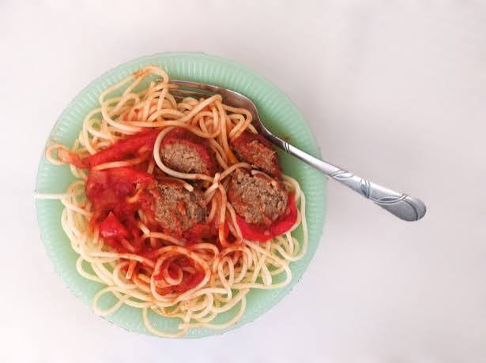

Spaghetti and meatballs
Home

This classic recipe will deliver the iconic spaghetti and meatballs with tomato sauce. When you want something easy to cook that everyone will love, this is the
recipe to go for.
Ingredients
Makes 6 servings
Meatballs
- 1 pound of lean ground beef
- 1 cup of bread crumbs
- 1 tablespoon of parsley
- 1 tablespoon of grated parmesan cheese
- 1/4 teaspooon of ground black pepper
- 1/8 teaspoon of garlic powder
- 1 egg, beaten
Sauce
- 3/4 cup of chopped onions
- 5 cloves of minced garlic
- 1/4 cup of olive oil
- 2 (28 ounces) of whole peeled tomatoes
- 2 teaspoons of salt
- 1 teaspoon of sugar
- 1 bay leaf
- 6 ounce of tomato paste
- 3/4 teaspoon of basil
- 1/2 teaspooon of ground black pepper
Extra Ingredients
- Spaghettis
- Grated cheese of choice as a topping
Steps
- In a large bowl, combine ground beef, parsley, Parmesan, black pepper, garlic powder, and beaten egg. Mix well and form into desired ball sizes. Refrigerate covered until needed
- In a large sacuepan over medium heat, sautee garlic and onions in olive oil until the onion becomes translucent.
- Add in tomatoes, bay leaf, salt, and sugar. Cover and simmer on low heat for about 90 minutes.
- Stir in tomato paste, pepper, basil, and meatballs and simmer for another 30 minutes.
- While letting the sauce and meatball simmer, cook the spaghetti in boiling water until desired texture.
- Serve sauce and meatballs over the spaghetti and top with cheese(optional). Enjoy!
Made by Piasic